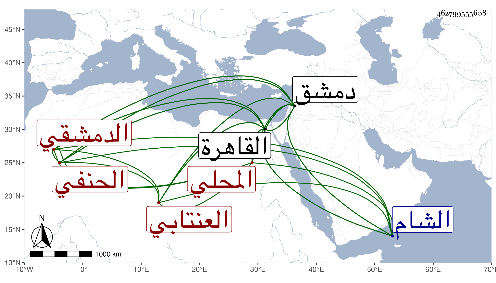

0902Sakhawi.DawLamic.ITO20230111-ara1.EIS1600.462799555608
Biography ID: 462799555608
875
محمد بن إبراهيم بن خضر المحب بن البرهان المحلي ثم العنتابي الدمشقي الحنفي نزيل القاهرة وأخو العماد إسماعيل قاضي الحنفية بدمشق ويعرف بين الطلبة بكبيش العجم لقبه به فيما ذكر عبد الله الكوراني وقارضه هو فلقبه تيس الكرد وقال إن كبش القوم سيدهم ، ممن فضل في العقليات وأخذ عن جماعة بدمشق والقاهرة منهم العلاء الحصني والكافياجي وناب في قضاء الحنفية عن العلاء بن قاضي عجلون قليلا بدمشق ثم عن ابن الشحنة وغيره بالقاهرة وامتنع الأمشاطي من استنابته واختص بمقدم المماليك مثقال وأم عنده وعرف بالإقدام وتردد إلي كثيرا وتشدد وتفيهق وانتقى من الصحاح وكان يراجعني في أشياء يظهر انتقاد القاموس فيها ، وآل أمره لشدة فقره إلى أن سافر إلى الشام فأقام في ظل أخيه .
